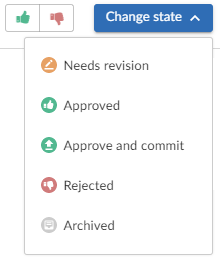
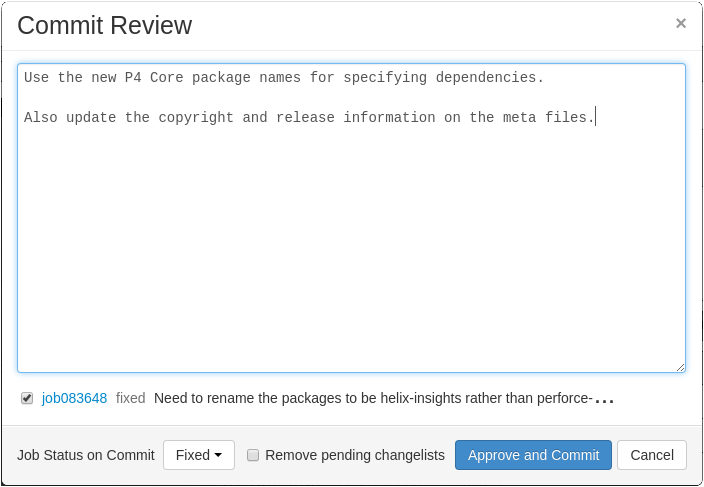

States
Reviews can be in one of several states. The biggest differentiator is whether the review's files have any outstanding, uncommitted changes or not.
Whenever a review state changes, an email notification is sent to all review participants, including:
- The review author
- Any user who comments on the review or its files
- Any user who has changed the review's state previously
- Any user who is @mentioned, or a member of a group that is @@mentioned in the review's description or comments.
The review state is indicated by the Review state icon on the Review page. The Change state button is used to change the state of a review, see Change review state.
Code reviews can be in one of the following states:
- Needs review: The review has started and the changes need to be reviewed.
- Needs revisions: The changes have been reviewed and the reviewer has indicated that further revisions are required.
- Approved: The review has completed. The changes may need to be committed. If the changes have been committed then this review will be Approved and closed, otherwise it will be Approved and open. See the note below.
- Rejected: The review has completed. The changes are undesirable and should not be committed.
- Archived: The review has completed for now. However, it is neither rejected nor approved; it is simply put aside in case it is needed in the future.
By default, when an Approved review is committed or updated, Swarm changes the state to Needs Review if the files have been modified since the review was approved. Files are considered modified if the list of involved files changes, or if the file content or file-type changes.
If one or more files in a review has the filetype +k (ktext), this behavior is undesirable because the files will appear to be modified when the Helix server replaces RCS keywords with their current values. See Unapprove modified reviews to see how to disable this behavior.
Self-approval by review authors
By default, review authors can approve their own reviews. This behavior is based on Swarm's advisory nature.
Self-approval by authors can be prohibited on a project-by-project basis by specifying moderators for project branches (see State change restrictions with moderation). However, authors who are moderators can self-approve their own reviews.
Administrators can configure Swarm to prevent all self-approval by review authors. See Disable self-approval of reviews by authors.
State change restrictions with moderation
Typically, any authenticated user can change the state of a review (remember that the review state is merely advisory in most cases).
When the Only Moderators can approve or reject reviews restriction is enabled for a project branch, that branch is moderated. See Add a project for details on adding moderators to project branches.
Changing the state of any review associated with a moderated branch is restricted as follows:
- Only moderators can approve or reject the review. Moderators can also transition a review to any other state.
-
The review's author, when not a moderator, can change the review's state to Needs review, Needs revision, Archived, and can attach committed changelists.
Normally, the review's author cannot change the review's state to Approved or Rejected on moderated branches. However, authors that are also moderators have moderator privileges, and may approve or reject their own review.
When
disable_self_approveis enabled, authors who are moderators (or even users with admin privileges) cannot approve their own reviews. - Project members can change the review's state to Needs review or Needs revision, and can attach committed changelists. Project members cannot change the review's state to Approved, Rejected, or Archived.
- Users that are not project members, moderators, or the review's author cannot transition the review's state.
- For the review's author and project members, if a review is not in one of their permitted states, for example if the review's state is Rejected, they cannot transition the review to another state.
Moderators prevent the automatic approval of reviews, for more information about automatically approving reviews using workflow rules see Workflow rules.
By default, when a review spans multiple branches that have different moderators, only one moderator from any one of the branches needs to approve the review.
Swarm can be configured to require that one moderator from each branch must approve the review, this is a global setting. If a moderator belongs to more than one of the branches spanned by the review, their approval will count for each of the branches they belong to. For instructions on how to configure moderator behavior, see Moderator behavior when a review spans multiple branches.
These restrictions have no effect on who can start a review.
Required reviewers
Reviews can optionally have required reviewers. When a review has required reviewers, the review cannot be approved until all required reviewers and required reviewer groups have up-voted the review. If the review is associated with a project that has assigned moderators, even the moderators cannot approve the review without up-votes from all required reviewers (but they can reject the review).
When a group is a required reviewer, it can be set to operate in one of two ways:
- Require all: all members of the group must up-vote the review to allow the review to be approved.
- Require one: at least one member of the group must up-vote the review to allow the review to be approved. If any member of the group down-votes the review, the review cannot be approved.
Required reviewers are expected to take greater care while performing a review than non-required reviewers, as their votes affect whether a review can be approved or not.
To edit the reviewers for a review and to change whether a reviewer is required or not, see Edit reviewers.
If a review involves a branch with assigned moderators, only a moderator can approve the review, even if all required reviewers have up-voted the review.
See Add a project for details on adding moderators to project branches.
Change review state
The Change state button on the Review display page is used to manually change the state of a Swarm review.
To change the state of the review:
- Navigate to the review you want to update.
- Click the Change State button.
- Select the new state from the dropdown menu.
The options available depend on the current state of the review and your user permissions: - Needs revision: Select to request changes to the files in the review.
- Needs review: Select to request further review of the changes.
- Approved (only available if the voting requirements for the review are satisfied. For information on voting requirements, see Required reviewers): select to approve the review.
- Committed (only available for pre-commit reviews that have been approved): Select to commit the review.
- Approve and commit (only available for unapproved pre-commit reviews when the voting requirements for the review are satisfied. For information on voting requirements, see Required reviewers.): Select to approve and commit the review in a single step, see Approve and commit.
- Rejected: Select to reject the review.
- Archived: Select to archive the review.
Approve and commit
Approve and commit is available in the dropdown menu for unapproved pre-commit reviews, this enables you to approve and commit a review in a single step if required.
- By default, any authorized user can commit a review. Swarm can be configured to restrict this behavior so that only the review author can commit the review, see Disable commit for details.
- Approve and commit is only available for unapproved pre-commit reviews when the voting requirements for the review are satisfied. For information on voting requirements, see Required reviewers.

If Swarm is configured to prevent approval of reviews with open tasks and a review has open tasks, the Approved, and Approve and commit options will not be available for the review. This option is configured by an administrator, see Disable approve for reviews with open tasks.
To approve, or approve and commit a review with open tasks, you must address the tasks first and then set them to Task Addressed, or Not a Task, see Set a task to Task addressed or Not a task for details.
- Select Approve and commit from the dropdown menu.
- The Commit Review dialog is displayed.
- Edit the review description if required.
- Select which jobs should be associated with the review, and specify the job status on commit.
- Select Remove pending changelists, Swarm will attempt to automatically clean up any changelists left behind after the review has been committed, including removing any shelved files. This option can be removed by an administrator, see Review cleanup for details.
- Click Approve and commit to approve the review and commit the associated files.

By default, Swarm records that you committed the review on behalf of the review's author. This can be configured by an administrator to only credit the committer and not the review author, see Commit credit for details.